北斗の拳 転生の章2
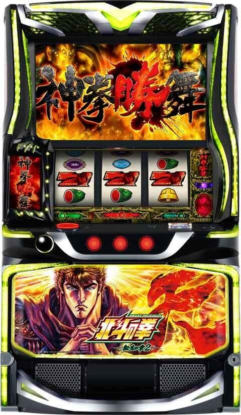
| 項目 | 内容 |
|---|---|
| 天井詳細 | 天井G数 1536あべし 恩恵 AT 1536あべしで天井到達。設定変更時は1280あべしに短縮。 |
| リセット判別 | リセット時は0-30あべしくらい内部加算があり |
| 有利区間について | 有利区間リセット時は上位ATへのCZ「天撃」に突入？ |
狙い目
朝イチからリセット狙い
0Gから40あべし前後のシャッター確認。有りでAT当選まで。無しでやめ。慎重に行くなら45あべしまで。
天破で40あべしを飛ばされた場合は170あべしのシャッター確認。シャッター無しの場合は256ゾーン見ずにやめ。
天破で256あべし抜けてシャッター確認出来ない場合は、ゾーン狙い期待値表の示唆40％を参考に押し引き。
機械割は107％くらいと予想される。
リセット狙い
| 条件 | 狙い目 |
|---|---|
| リセット後（896以内非当選想定） | 700あべし～ |
ゲーム数天井狙い
| 条件 | 狙い目 |
|---|---|
| 天井狙い（896以内非当選想定） | 900あべし～ |
| モードB以上濃厚 | 0あべし～ |
| モードC以上濃厚 | 0あべし～ |
※データ機上のハマりゲーム数が浅いほど、あべし数が飛ばされてモード確認が出来ていない可能性が上がる。逆にデータ機とあべし数が近いと前兆を確認されていてモードAの可能性が高いことが想定される。データ機750G、あべし数750の様な状況だと800あべしから等調整した方が良さそう。
 【北斗転生】ゾーン・示唆確認狙い 完全マニュアル
【北斗転生】ゾーン・示唆確認狙い 完全マニュアル
1. 基本ルール（押し引きの基準）
- 続行条件: 規定あべし数で**「レア役を引かずに」シャッター演出（前兆）が発生すれば、896あべし以内濃厚。その場合はAT当選まで打ち切る**。
- ヤメ条件: 各ゾーンのヤメ時に到達してシャッター演出が無ければ、896あべし以降濃厚と判断し**「即ヤメ」**。
- 重要確認事項: 380あべし以降を狙う際は、必ず「実ゲーム数」と液晶の「あべし数」のズレを確認する。
- 前兆有無見極めのコツ
- シャッター演出が発生する場合は、他の前兆演出も発生しているため演出がざわつく。
- 例えば、300までにシャッター来なくても、それまでに演出が頻繁に発生するなら落ち着くまで回すなど調整する。逆に298までに前兆演出が発生しなければ、前兆無しと判断が出来る。
2. ゾーン別 狙い目・ヤメ時一覧
| ゾーン | 打ち始め目安 | シャッター目安 | ヤメ時 |
| 40ゾーン | 10 〜 40あべし | 26 〜 46あべし | 45あべし |
| 170ゾーン | 130 〜 160あべし | 165 〜 175あべし | 175あべし |
| 290ゾーン | 280 〜 290あべし | 291 〜 302あべし | 300あべし |
| 430ゾーン | 390 〜 420あべし | 421 〜 432あべし | 435あべし |
| 490ゾーン | 450 〜 490あべし | 480 〜 494あべし | 500あべし |
| 620ゾーン | 580 〜 610あべし | 608 〜 624あべし | 624あべし |
| 680ゾーン | 650 〜 680あべし | 672 〜 688あべし | 688あべし |
3. 実ゲーム数乖離による打ち出し調整（380あべし以降）
前任者がすでに示唆を確認してヤメたリスクを「実ゲーム数」で回避します。
 実ゲーム数 50G以内（信頼度：高）
実ゲーム数 50G以内（信頼度：高）
- 前任者が示唆を見られていない可能性が高い。
- 430狙い: 390あべし〜 / 490狙い: 440あべし〜
 実ゲーム数 100G以内（信頼度：中）
実ゲーム数 100G以内（信頼度：中）
- 430狙い: 405あべし〜 / 490狙い: 465あべし〜
 それ以外（信頼度：低）
それ以外（信頼度：低）
- 430狙い: 420あべし〜 / 490狙い: 480あべし〜
 乖離 50以内（激辛：前任者が確認済みの可能性大）
乖離 50以内（激辛：前任者が確認済みの可能性大）
- 430狙い: 420あべし〜 / 490狙い: 480あべし〜（※基本スルー推奨）
4. 立ち回りのワンポイントアドバイス
- 170ゾーン狙い: 130あべしから打てる。175あべしでシャッターが出なければ未練なくヤメること。40あべしを確認されていると打てない。
- 290ゾーン: 実ゲームとの乖離が少ない場合は、中身を見切られているリスクを考慮してボーダーを290あべし〜に引き上げる。前任者のレベルが高そうなら打てない。
- 最重要ポイント: 400ゾーン以降は**「どれだけ天破でワープし、実ゲーム数が進んでいないか」**が期待値の正体。液晶の数字よりも実ゲーム数の少なさを最優先する。
5. 620ゾーン、680ゾーン狙いについて
実践上、この区間にてシャッター発生で1280あべし以内当選濃厚。896以内も見込めるためシャッター発生でかなり熱い。ただ、シャッター発生を確認済みのケースが多いため、実ゲームとの乖離や前任者等を意識して狙う。
シャッター狙い時のボーダー調整要因
条件によって機械割が上下する。シャッター有り時だけのデータを抽出する事は出来ないので、機械割の上下は目安になります。
前回連数
前回7連以上 機械割1％くらい上がりそう
前回7連未満 機械割0.5％くらい下がりそう
※7連以上後は早い初当たり時のATの冷遇が無い分強くなると思われる。
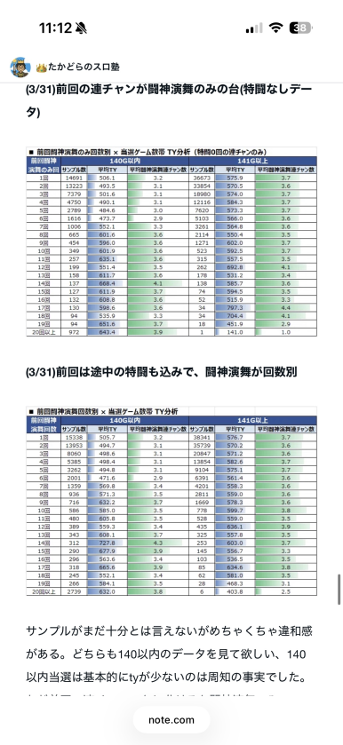
前回当選あべし数
前回513～576あべしゾーン(モードC天井）当選後 機械割2-4％くらい上がりそう
それ以外 機械割0.5くらい下がりそう
※C天井当選後は他の当選契機に比べ、約80あべしほど初当たりが軽くなる。
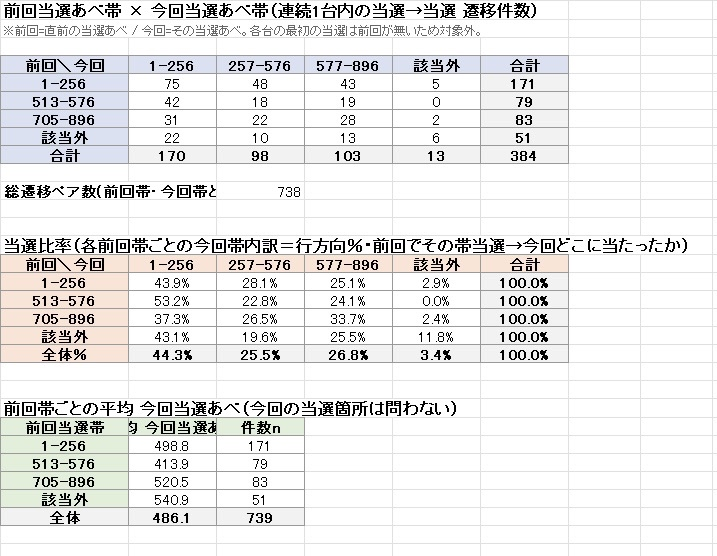
差枚
差枚+1000枚以上 機械割3％くらい上がりそう
差枚+0枚以上 機械割変更無し
差枚マイナス 機械割0.5％くらい下がりそう
期待値表
モードB以上時の期待値表
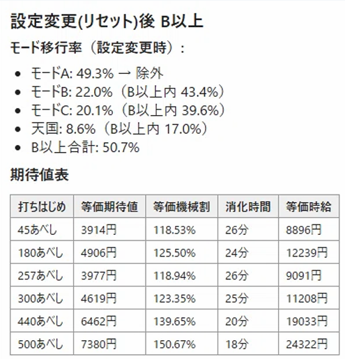
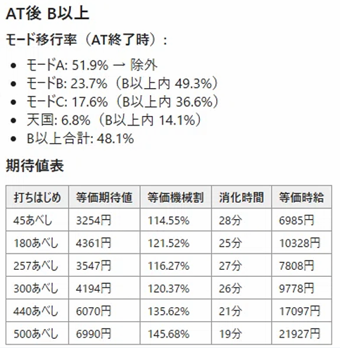
期待値表の条件等
期待値表作成の参考元 ヲ猿note（無料）
モードB、C確定時の期待値表はヲ猿氏noteのモードB、Cの期待値表を設定1（公表値）のB、Cの振り分けに想定して計算。解析値ベースのため期待値を1割減と調整。
ゾーン狙い時の条件は、コイン持ち31.5G、示唆無しやめは無抽選区間を消化したとする。示唆有り続行時はモードB、C確定時の期待値表を使用。
【重要】 シャッター演出（前兆）によるモード判別について
【896以内当選濃厚となる条件】 以下のあべし数付近で、**「レア役を引かずに」**シャッター演出が発生すれば896以内当選濃厚が濃厚。896以内当選濃厚の場合は90％前後発生。
- 40(35-45) / 170(165-175) / 300(291-302) / 430(421-432) / 490(480-494) あべし
【なぜシャッター演出を重視するのか？】
- 前兆の役割を担っているため シャッター演出はATの前兆としての役割を持っており、前兆（フェイク含む）発生中には極めて高い確率で発生する。
- 他の演出よりも前兆期待度が高い 他にも前兆を示唆する演出はあるが、それらは「天破の刻の煽り」や「高確示唆」として発生することも多い。対して、シャッター演出は「ATの前兆」に特化しており、発生時点で前兆濃厚と言えるため判別の軸に最適。
- 前兆が発生しているのにシャッター演出が来ないケースはある（10％前後？）、前兆自体は100％来ているが、その内10％がシャッター演出を伴わないから90％前後シャッター演出が来るという認識で良さそう。
【 注意点：レア役成立時】
注意点：レア役成立時】
- レア役成立G時のシャッター演出は、モードに関わらず「レア役による演出」として発生する可能性がある。
- この場合は896以内当選濃厚とはならないため、対象からは除外する。
ゾーン狙い
※シャッター演出の有無の影響が強すぎるため、落ちている台で以下のゾーン狙いは出来ないと考えた方が良さそう。
| 条件 | 狙い目 |
|---|---|
| 193-256あべし | 190あべし～ |
| 65-128あべし | 狙えない |
| 513-576あべし | 550あべし～ |
※カサンドラステージ滞在なら天破の刻当選が少し期待出来るため10あべしボーダー下げれるかも？
示唆関連の押し引きについて
| 示唆・条件 | 対応 |
|---|---|
| 上位CZ（天撃）失敗後 | 天国濃厚 |
| 上位AT終了後 | 天国濃厚（上位ATも最後は上位CZ失敗で終わるため） |
| 天破の刻（帯色：赤） | 規定ポイント近いため当選まで？ |
| 天破の刻（帯色：キリン） | 規定あべし到達濃厚 |
| サブ液晶（金色） | AT当選まで |
有利区間関連狙い
差枚+1600枚以上 0Gから 40あべし付近でシャッター無しはやめで良さそう？シャッター無しを確認出来るまではしっかりフォロー。
AT後は差枚関係なく40あべし前後までは見た方が良さそうだが、慎重派は差枚+1000枚以上なら40あべし前後まで確認など調整する。
やめ時
AT後は積極派は40あべし前後（慎重に行くなら45あべしまで）のシャッター確認した方が現状は良さそう。天破で飛ばされた場合、ゾーン狙い期待値表の示唆40％を参考に押し引き。170あべし付近でシャッター無しは256確認せずやめ。慎重派は10-30あべしあれば40あべし前後チェック。0-10あべしなら即やめ？
AT後0あべしからのシャッター狙いは機械割103-104％と思われる。
上位CZ後は天国確認。
上位CZ失敗後は「あべしUI」が下記の様に赤になる。
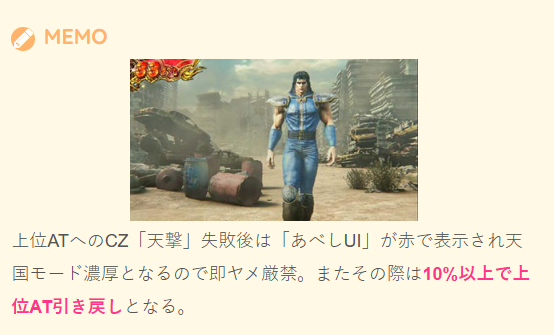
2/26以降想定される状況
今後、896以内当選濃厚有無の判別が浸透すると想定されます。
天井狙いは896以降当選を想定して考えるのが無難です。
以下に立ち回りの注意点をAIで纏めました。
【北斗転生】浸透後の立ち回り：リスク管理と台番メモ術
狙い目が認知された環境では、「一度ライバルが触った台」を避けることが期待値の欠損を防ぐ鍵となります。
1. 台番メモによる「ブラックリスト」管理
一見するとお宝台（280あべしや420あべし等）に見えても、中身が896以降当選（示唆なし確認済み）である台を回避するため、以下の台番をメモしておきます。
- チェック対象の台（先行見切り・ゾーン見切り）:
- 40・170・305・436・500あべしなど、各示唆確認ポイントの直後にヤメられた台。
- メモの活用:
- スマホのメモ帳等に「123番台（170ヤメ）」「156番台（436ヤメ）」と記録。
- 数時間後、その台がどれだけ良いあべし数で落ちていても、自信を持ってスルーする。
2. 「見えないフィルター」の判別（実ゲーム数乖離）
メモがない台や、新しく空いた台については、液晶あべしではなく「実ゲーム数」で前任者のチェック有無を判断します。
- 狙える台（未確認）: 液晶あべしに対して実ゲーム数が極端に少ない台。前任者が示唆を確認するチャンスがなかった可能性が高い。
- 避けたい台（確認済み）: 実ゲーム数がしっかり回っている台。前任者が各ポイントでのシャッター演出をすでに確認し、ハズレと分かって捨てた可能性が高い。
3. 「打たれている背景」の観察
- 一般客・年配客のヤメ台: 示唆や乖離を意識していないことが多いため、数値通りの期待値（ピュアな台）が拾いやすい。
- 専業・ライバルのヤメ台: ほぼ確実に「示唆なし」を確認済みの896以上濃厚台。罠である可能性が高いため、手出し厳禁。
 立ち回りの結論
立ち回りの結論
「あべし数」だけを見る層が拾って失敗する台を、あなたは「台番メモ」と「乖離チェック」で事前に除外する。 この精度の差が、狙い目が浸透した後のホールで収支に大きな差をつけます。
その他
上位ATの履歴
上位CZ成功時は19:27の履歴の様にART5-7Gの信号が上がる。
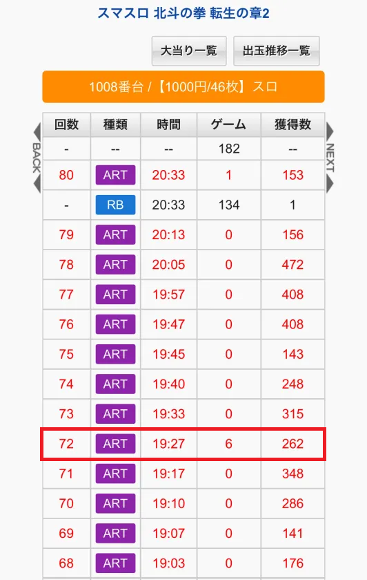
通常時のモード
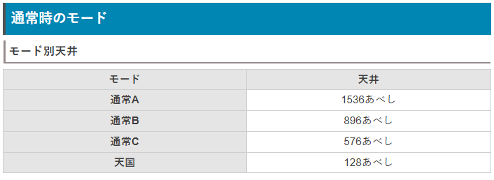
モード別ゾーン期待度（設定変更時）
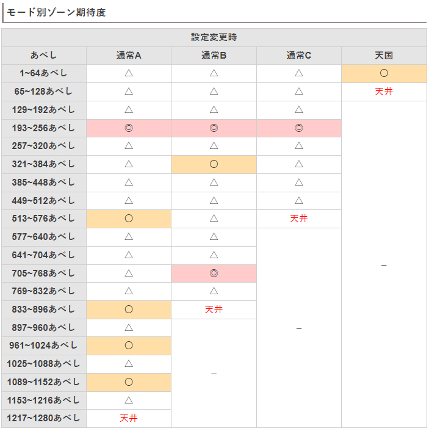
モード別ゾーン期待度（設定変更時以外）
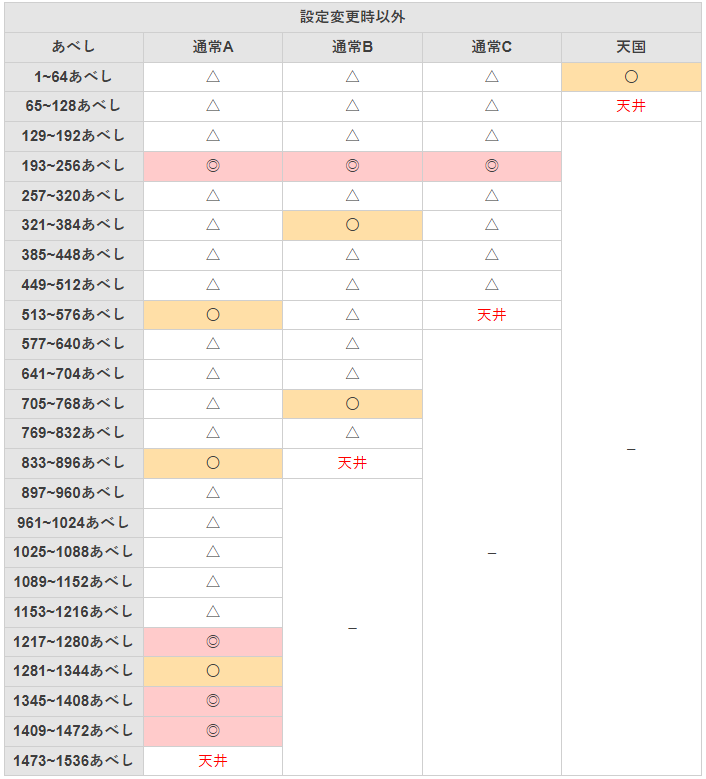
内部状態・ステージ
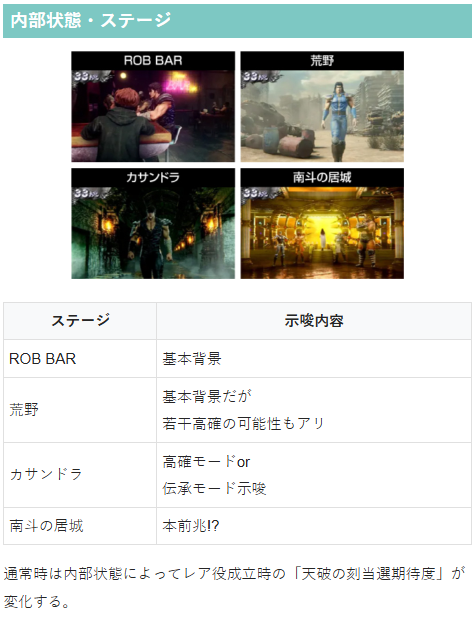
ゾーン毎のフェイク前兆発生率
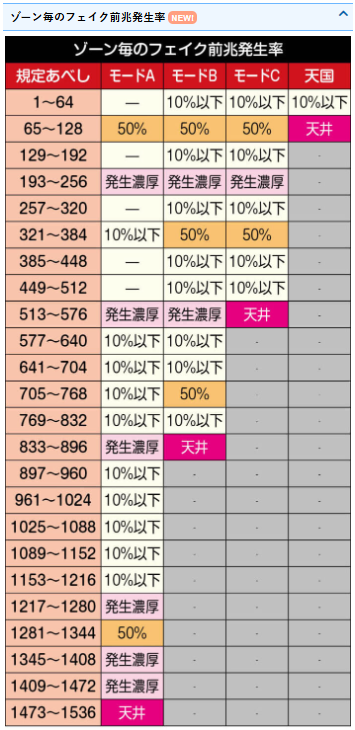
100G毎のランプ示唆（筐体上部両サイドの点灯）
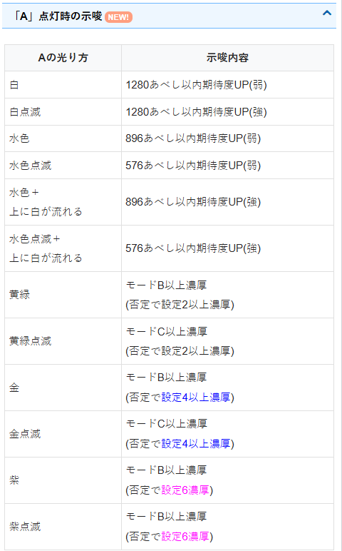
100G毎のランプ示唆（サブ液晶の点灯）
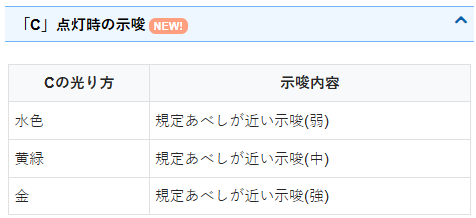
参考元
基本情報
- メーカー: サミー
- 機械割: 97.6% 〜 114.9%
- 導入開始日: 2026年01月05日（月）
- ゲーム性概要: ●通常時は規定あべし到達やレア役での直撃でATに当選 ●AT「闘神演舞」は1セット30Gで純増は約4.0枚 ●AT中は成立役に応じて勝舞魂の獲得を抽選 ●ゲーム数消化後は神拳勝舞で継続をジャッジ ●神拳勝舞は獲得した勝舞魂の分だけ継続 ●勝舞魂1個あたりの期待度は約1/5、勝舞揃い時は約50%で勝利する ●勝舞魂獲得の特化ゾーンやSPバトルも搭載 ●上位ATの「裏闘神演舞」突入で期待枚数は3000枚超！


打ち方
打ち方・小役
打ち方（小役狙い）
「最初に狙う絵柄」 左リールに神拳BARorBAR（北斗）を狙う。 スイカ停止時は中・右リールにもスイカを目押しよう。
※停止形は神拳BAR狙い時のもの
「中段チェリー停止時」
中・右リールに神拳BARを狙い、チェリーが中段に揃えば確定チェリー。 神拳BARよりもBARを狙った時のほうが、強チェリー成立時に中段チェリーが停止しやすい。
「角チェリー停止時」 中＆右リールはフリー打ちでOK。
「スイカ停止時」 中・右リールにスイカを狙う（いずれも赤7目安）。スイカハズレでチャンス目。
「レア役の停止例」
変則押しはNG
通常時は左リール第1停止での消化を推奨する。 AT中の押し順ナビ非発生時は中押しもOKだ。
中押し手順（AT中のナビなし時のみ）
「最初に中リールに赤7を目押し」 AT中の押し順ナビ非発生時は中押しで楽しむことも可能（天撃中は中押しNG）。 中押し時は、まず中リール枠内に赤7を狙う。
「赤7上段停止時」 左・右リールにスイカを狙う。スイカハズレでチャンス目。
「赤7中段停止時」
弱チェリーor強チェリーor確定チェリーが成立。 中押し時は強チェリー時に必ず中段チェリーが停止（角チェリー＝弱チェリー）。強チェリーor確定チェリーは右リールの停止形で判別することができる。
「ベル中段停止時」 ハズレorベルor勝舞揃いが成立。
「勝舞中段停止時」 勝舞揃い濃厚。
解析情報通常時
小役関連
小役確率
| 役 | 確率 |
|---|---|
| ハズレ | 1/1.4 |
| リプレイ | 1/8.7 |
| 右下がりベル | 1/8.2 |
| 勝舞揃い | 1/198.6 |
| チャンス目 | 1/199.2 |
| 弱チェリーA | 1/199.2 |
| 弱チェリーB | 1/199.2 |
| 強チェリーA | 1/397.2 |
| 強チェリーB | 1/397.2 |
| スイカ | 1/79.9 |
| 確定チェリー | 1/16384.0 |
※レア役合算確率は1/26.5
チェリー確率合算
| 役 | 確率 |
|---|---|
| 弱チェリー | 1/99.6 |
| 強チェリー | 1/198.6 |
小役確率は全設定共通だ。
内部状態関連
内部状態概要
通常時は、滞在状態によってレア役成立時の天破の刻当選期待度が変化。 カサンドラステージは高確or伝承モード滞在を示唆している。
［設定変更時］内部状態振り分け
| 設定 | 低確 | 通常 | 高確 |
|---|---|---|---|
| 1 | 25.0% | 25.0% | 50.0% |
| 2 | 25.0% | 25.0% | 50.0% |
| 3 | 25.0% | 25.0% | 50.0% |
| 4 | 25.0% | 25.0% | 50.0% |
| 5 | 25.0% | 25.0% | 50.0% |
| 6 | 25.0% | 25.0% | 50.0% |
［AT終了時］内部状態振り分け
| 設定 | 低確 | 通常 | 高確 |
|---|---|---|---|
| 1 | ー | 40.6% | 59.4% |
| 2 | ー | 40.6% | 59.4% |
| 3 | ー | 40.6% | 59.4% |
| 4 | ー | 40.6% | 59.4% |
| 5 | ー | 40.6% | 59.4% |
| 6 | ー | 40.6% | 59.4% |
［伝承モード終了時］内部状態振り分け
設定変更時・AT終了時・伝承モード終了時に内部状態を決定。以降はレア役成立時に昇格を、ハズレ・リプレイ・右下がりベルで転落を抽選する。
［通常中］内部状態移行率（全設定共通）
| 役 | 低確へ | 通常のまま | 高確へ |
|---|---|---|---|
| チャンス目・勝舞揃い | ー | 28.1% | 71.9% |
| 弱チェリー | ー | 53.1% | 46.9% |
| 強チェリー | ー | ー | 100% |
| スイカ | ー | 33.6% | 66.4% |
| ハズレ・リプレイ・ 右下がりベル | 2.3% | 97.7% | ー |
［高確中］内部状態移行率（全設定共通）
| 役 | 低確へ | 通常へ | 高確のまま |
|---|---|---|---|
| ハズレ・リプレイ・ 右下がりベル | ー | 2.3% | 97.7% |
転落は1段階ずつなので、高確からいきなり低確へ落ちることはない。
※少数第2位を四捨五入しているため、表内の数値が100%を超える箇所あり
モード
伝承モード
天破の刻終了後は必ず伝承モードへ移行して、高確率で天破の刻を抽選。ショート＜ミドル＜ロングの3種類があり、それぞれ転落率が異なる。 天破の刻後は基本的にカサンドラステージに滞在。演出等で伝承モードに滞在しているかどうかを示唆する。
伝承モードごとの天破の刻ループ期待度
| モード | 期待度 |
|---|---|
| ショート | 24.5% |
| ミドル | 69.4% |
| ロング | 90.1% |
モードごとの天井あべし
| モード | 天井 |
|---|---|
| 通常A | 1536あべし（※） |
| 通常B | 896あべし |
| 通常C | 576あべし |
| 天国 | 128あべし |
※設定変更時は最大1280あべしに短縮
［設定変更時］ モードごとのゾーン期待度
| あべし | 通常A | 通常B | 通常C | 天国 |
|---|---|---|---|---|
| 1～64あべし | △ | △ | △ | 〇 |
| 6５～128あべし | △ | △ | △ | 天井 |
| 129～192あべし | △ | △ | △ | |
| 193～256あべし | ◎ | ◎ | ◎ | |
| 257～320あべし | △ | △ | △ | |
| 321～384あべし | △ | 〇 | △ | |
| 385～448あべし | △ | △ | △ | |
| 449～512あべし | △ | △ | △ | |
| 513～576あべし | 〇 | △ | 天井 | |
| 577～640あべし | △ | △ | ||
| 641～704あべし | △ | △ | ||
| 705～768あべし | △ | ◎ | ||
| 769～832あべし | △ | △ | ||
| 833～896あべし | 〇 | 天井 | ||
| 897～960あべし | △ | |||
| 961～1024あべし | 〇 | |||
| 1025～1088あべし | △ | |||
| 1089～1152あべし | 〇 | |||
| 1153～1216あべし | △ | |||
| 1217～1280あべし | 天井 |
1281～1344あべし
1345～1408あべし
1409～1472あべし
1473～1536あべし
［設定変更時以外］ モードごとのゾーン期待度
| あべし | 通常A | 通常B | 通常C | 天国 |
|---|---|---|---|---|
| 1～64あべし | △ | △ | △ | 〇 |
| 6５～128あべし | △ | △ | △ | 天井 |
| 129～192あべし | △ | △ | △ | |
| 193～256あべし | ◎ | ◎ | ◎ | |
| 257～320あべし | △ | △ | △ | |
| 321～384あべし | △ | 〇 | △ | |
| 385～448あべし | △ | △ | △ | |
| 449～512あべし | △ | △ | △ | |
| 513～576あべし | 〇 | △ | 天井 | |
| 577～640あべし | △ | △ | ||
| 641～704あべし | △ | △ | ||
| 705～768あべし | △ | 〇 | ||
| 769～832あべし | △ | △ | ||
| 833～896あべし | 〇 | 天井 | ||
| 897～960あべし | △ | |||
| 961～1024あべし | △ | |||
| 1025～1088あべし | △ | |||
| 1089～1152あべし | △ | |||
| 1153～1216あべし | △ | |||
| 1217～1280あべし | ◎ | |||
| 1281～1344あべし | 〇 | |||
| 1345～1408あべし | ◎ | |||
| 1409～1472あべし | ◎ | |||
| 1473～1536あべし | 天井 |
193〜256あべしは全モード共通で期待度が高い。
モードごとのフェイク前兆発生期待度
| あべし | 通常A | 通常B | 通常C | 天国 |
|---|---|---|---|---|
| 1～64あべし | × | △ | △ | △ |
| 6５～128あべし | 〇 | 〇 | 〇 | 天井 |
| 129～192あべし | × | △ | △ | |
| 193～256あべし | ◎ | ◎ | ◎ | |
| 257～320あべし | × | △ | △ | |
| 321～384あべし | △ | 〇 | 〇 | |
| 385～448あべし | × | △ | △ | |
| 449～512あべし | × | △ | △ | |
| 513～576あべし | ◎ | ◎ | 天井 | |
| 577～640あべし | △ | △ | ||
| 641～704あべし | △ | △ | ||
| 705～768あべし | △ | 〇 | ||
| 769～832あべし | △ | △ | ||
| 833～896あべし | ◎ | 天井 | ||
| 897～960あべし | △ | |||
| 961～1024あべし | △ | |||
| 1025～1088あべし | △ | |||
| 1089～1152あべし | △ | |||
| 1153～1216あべし | △ | |||
| 1217～1280あべし | ◎ | |||
| 1281～1344あべし | 〇 | |||
| 1345～1408あべし | ◎ | |||
| 1409～1472あべし | ◎ | |||
| 1473～1536あべし | 天井 |
※×…フェイク前兆は発生しない ※△…10%以下でフェイク前兆が発生 ※○…約50%でフェイク前兆が発生 ※◎…基本的にフェイク前兆が発生
モードごとにフェイク前兆（天命の刻）の発生率が異なるため、前兆発生タイミングからある程度滞在モードを絞り込むことが可能。 ただし、天破の刻であべしが加算されたことにより、「ゾーンを超えてしまった」場合や「ゾーンの終盤に到達してしまった」場合など、本来は発生するはずだった前兆が発生しないケースもある。
※設定変更時はランダムにあべしが加算されるため、ゾーンがズレる可能性あり
通常モード移行率（設定1）
| モード | 設定変更時 | AT終了時 |
|---|---|---|
| 通常A | 49.3% | 51.9% |
| 通常B | 22.0% | 23.7% |
| 通常C | 20.1% | 17.6% |
| 天国 | 8.6% | 6.8% |
伝承モード移行率
| 伝承モード | 設定変更時 | 天破の刻初当り時 | AT終了時 |
|---|---|---|---|
| 非当選 | 93.7% | ー | 98.4% |
| ショート | 6.3% | 98.4% | 1.6% |
| ミドル | ー | 1.2% | ー |
| ロング | ー | 0.4% | ー |
※AT終了時は伝承モード非滞在時のみ抽選
伝承モードへの移行契機は設定変更時・天破の刻初当り時・AT終了時の3つで、伝承モード中のレア役で昇格を抽選。伝承モード滞在中はハズレとリプレイ時に転落が抽選される。
伝承モード昇格率 伝承ショート滞在時
| 役 | ショートのまま | ミドルへ | ロングへ |
|---|---|---|---|
| チャンス目 | 75.0% | 24.6% | 0.4% |
| 勝舞揃い | 75.0% | 24.6% | 0.4% |
| 弱チェリー | 87.5% | 12.5% | ー |
| 強チェリー | ー | 99.6% | 0.4% |
| スイカ | 87.5% | 12.5% | ー |
| 確定チェリー | ー | ー | 100% |
伝承ミドル滞在時
| 役 | ショートへ | ミドルのまま | ロングへ |
|---|---|---|---|
| チャンス目 | ー | 99.2% | 0.8% |
| 勝舞揃い | ー | 99.2% | 0.8% |
| 弱チェリー | ー | 99.6% | 0.4% |
| 強チェリー | ー | 98.4% | 1.6% |
| スイカ | ー | 99.6% | 0.4% |
| 確定チェリー | ー | ー | 100% |
［ハズレ・リプレイ成立時］伝承モードからの転落率
| 伝承モード | 転落率 |
|---|---|
| ショート | 32.8% |
| ミドル | 4.7% |
| ロング | 1.2% |
［設定変更時］256あべしまでのAT当選率
設定変更後は256あべしまでにAT当選のチャンス。高設定ほど当選しやすいので、朝イチは積極的に狙っていきたい。
規定あべし抽選
あべし解説
［転生シリーズお馴染みのあべし］ 通常時は1Gごとに1あべしが加算されていき、規定のあべしに到達すればATに当選。 あべしの大量加算に期待できる特化ゾーン「天破の刻」もある。
「UIの色」 あべし表示のUIは白文字がデフォルト。 上位CZ「天撃」失敗時は赤文字に変化する（天国濃厚）。
［設定変更時］ 規定あべし振り分け（設定1）
| あべし | 通常A | 通常B | 通常C | 天国 |
|---|---|---|---|---|
| 1～64あべし | 0.26% | 0.29% | 0.03% | 12.50% |
| 6５～128あべし | 1.80% | 2.02% | 0.22% | 87.50% |
| 129～192あべし | 0.36% | 0.45% | 0.40% | ー |
| 193～256あべし | 26.26% | 32.72% | 28.77% | ー |
| 257～320あべし | 0.15% | 0.90% | 0.45% | ー |
| 321～384あべし | 0.88% | 5.41% | 2.69% | ー |
| 385～448あべし | 0.15% | 0.03% | 1.40% | ー |
| 449～512あべし | 0.15% | 0.03% | 1.40% | ー |
| 513～576あべし | 6.71% | 1.21% | 64.63% | ー |
| 577～640あべし | 0.10% | 0.89% | ー | ー |
| 641～704あべし | 0.10% | 0.89% | ー | ー |
| 705～768あべし | 1.19% | 10.68% | ー | ー |
| 769～832あべし | 0.10% | 0.89% | ー | ー |
| 833～896あべし | 4.85% | 43.60% | ー | ー |
| 897～960あべし | 0.89% | ー | ー | ー |
| 961～1024あべし | 5.34% | ー | ー | ー |
| 1025～1088あべし | 0.89% | ー | ー | ー |
| 1089～1152あべし | 5.34% | ー | ー | ー |
| 1153～1216あべし | 0.89% | ー | ー | ー |
| 1217～1280あべし | 43.62% | ー | ー | ー |
| 1281～1344あべし | ー | ー | ー | ー |
| 1345～1408あべし | ー | ー | ー | ー |
| 1409～1472あべし | ー | ー | ー | ー |
| 1473～1536あべし | ー | ー | ー | ー |
設定変更はランダムにあべしが加算されてスタートするため、ゾーンがズレる可能性あり。
［設定変更時以外］ 規定あべし振り分け（設定1）
| あべし | 通常A | 通常B | 通常C | 天国 |
|---|---|---|---|---|
| 1～64あべし | 0.20% | 0.21% | 0.03% | 12.50% |
| 6５～128あべし | 1.37% | 1.49% | 0.20% | 87.50% |
| 129～192あべし | 0.31% | 0.37% | 0.40% | ー |
| 193～256あべし | 21.94% | 26.59% | 28.81% | ー |
| 257～320あべし | 0.12% | 0.73% | 0.45% | ー |
| 321～384あべし | 0.73% | 4.41% | 2.70% | ー |
| 385～448あべし | 0.12% | 0.02% | 1.41% | ー |
| 449～512あべし | 0.12% | 0.02% | 1.38% | ー |
| 513～576あべし | 5.60% | 0.98% | 64.64% | ー |
| 577～640あべし | 0.11% | 0.99% | ー | ー |
| 641～704あべし | 0.12% | 1.01% | ー | ー |
| 705～768あべし | 1.40% | 12.23% | ー | ー |
| 769～832あべし | 0.11% | 1.00% | ー | ー |
| 833～896あべし | 5.71% | 49.93% | ー | ー |
| 897～960あべし | 0.11% | ー | ー | ー |
| 961～1024あべし | 0.71% | ー | ー | ー |
| 1025～1088あべし | 0.12% | ー | ー | ー |
| 1089～1152あべし | 0.73% | ー | ー | ー |
| 1153～1216あべし | 0.12% | ー | ー | ー |
| 1217～1280あべし | 10.99% | ー | ー | ー |
| 1281～1344あべし | 3.40% | ー | ー | ー |
| 1345～1408あべし | 15.11% | ー | ー | ー |
| 1409～1472あべし | 29.30% | ー | ー | ー |
| 1473～1536あべし | 1.45% | ー | ー | ー |
［設定変更時］ ゾーン到達時のAT当選期待度（設定1）
| あべし | 通常A | 通常B | 通常C | 天国 |
|---|---|---|---|---|
| 1～64あべし | 0.26% | 0.29% | 0.03% | 12.50% |
| 6５～128あべし | 1.80% | 2.03% | 0.22% | 100% |
| 129～192あべし | 0.37% | 0.47% | 0.40% | ー |
| 193～256あべし | 26.91% | 33.65% | 28.96% | ー |
| 257～320あべし | 0.20% | 1.40% | 0.63% | ー |
| 321～384あべし | 1.23% | 8.51% | 3.83% | ー |
| 385～448あべし | 0.21% | 0.05% | 2.08% | ー |
| 449～512あべし | 0.21% | 0.05% | 2.13% | ー |
| 513～576あべし | 9.59% | 2.08% | 100% | ー |
| 577～640あべし | 0.16% | 1.56% | ー | ー |
| 641～704あべし | 0.16% | 1.59% | ー | ー |
| 705～768あべし | 1.88% | 19.35% | ー | ー |
| 769～832あべし | 0.16% | 2.00% | ー | ー |
| 833～896あべし | 7.84% | 100% | ー | ー |
| 897～960あべし | 1.56% | ー | ー | ー |
| 961～1024あべし | 9.52% | ー | ー | ー |
| 1025～1088あべし | 1.75% | ー | ー | ー |
| 1089～1152あべし | 10.71% | ー | ー | ー |
| 1153～1216あべし | 2.00% | ー | ー | ー |
| 1217～1280あべし | 100% | ー | ー | ー |
| 1281～1344あべし | ー | ー | ー | ー |
| 1345～1408あべし | ー | ー | ー | ー |
| 1409～1472あべし | ー | ー | ー | ー |
| 1473～1536あべし | ー | ー | ー | ー |
［設定変更時以外］ ゾーン到達時のAT当選期待度（設定1）
| あべし | 通常A | 通常B | 通常C | 天国 |
|---|---|---|---|---|
| 1～64あべし | 0.20% | 0.21% | 0.03% | 12.50% |
| 6５～128あべし | 1.37% | 1.50% | 0.20% | 100% |
| 129～192あべし | 0.31% | 0.38% | 0.40% | ー |
| 193～256あべし | 22.36% | 27.16% | 28.99% | ー |
| 257～320あべし | 0.16% | 1.02% | 0.63% | ー |
| 321～384あべし | 0.96% | 6.24% | 3.85% | ー |
| 385～448あべし | 0.16% | 0.03% | 2.08% | ー |
| 449～512あべし | 0.16% | 0.03% | 2.08% | ー |
| 513～576あべし | 7.46% | 1.48% | 100% | ー |
| 577～640あべし | 0.16% | 1.52% | ー | ー |
| 641～704あべし | 0.17% | 1.58% | ー | ー |
| 705～768あべし | 2.02% | 19.36% | ー | ー |
| 769～832あべし | 0.17% | 1.97% | ー | ー |
| 833～896あべし | 8.42% | 100% | ー | ー |
| 897～960あべし | 0.18% | ー | ー | ー |
| 961～1024あべし | 1.15% | ー | ー | ー |
| 1025～1088あべし | 0.20% | ー | ー | ー |
| 1089～1152あべし | 1.20% | ー | ー | ー |
| 1153～1216あべし | 0.20% | ー | ー | ー |
| 1217～1280あべし | 18.24% | ー | ー | ー |
| 1281～1344あべし | 6.90% | ー | ー | ー |
| 1345～1408あべし | 32.95% | ー | ー | ー |
| 1409～1472あべし | 95.28% | ー | ー | ー |
| 1473～1536あべし | 100% | ー | ー | ー |
天破の刻
天破の刻概要
成立役に応じてあべしの加算が抽選される特化ゾーン。AT当選時に余ったあべしはAT終了後に持ち越されるので、大量に加算できればATの即連にも期待できる。 上位CZまで到達した場合はあべしがリセットされるが、上位CZ終了後は必ず天国へ移行する。
天破の刻性能
| 当選契機 | レア役での抽選 |
|---|---|
| 継続ゲーム数 | 7or14or21Gor無限 |
| 消化中の抽選 | 成立役に応じたあべし加算抽選 |
| 1Gの加算あべし | 5～999あべし |
| 備考 | 余ったあべしはAT終了後へ持ち越し |
14G以上が選ばれていた場合、7Gごとに継続告知が発生する。
実質天破の刻確率
※伝承モード中のループも含んだ実質の当選確率
「帯色」 液晶下部の帯色は青＜黄＜赤＜キリン柄の4種類で、色によって規定あべし到達期待度を示唆する。
「あべしチャレンジ」 天破の刻終了時は、あべしチャレンジで規定あべしに到達したかをジャッジ。タイトル色は青＜赤＜キリン柄の順にチャンスだ。 AT終了後もあべしが余っている場合はあべしチャレンジが発生することがある。
タイトル色の示唆
| 色 | 示唆 |
|---|---|
| 青 | デフォルト |
| 赤 | 成功期待度アップ |
| キリン柄 | 成功濃厚 |
キリン柄タイトルはAT当選濃厚。赤はAT非当選だったとしても、青に比べて規定あべしが近い可能性がある。
天破レベルの特徴
| レベル | 特徴 |
|---|---|
| レベル1 | デフォルト |
| レベル2 | 小役入賞で50あべし以上 |
| レベル3 | 小役入賞で100あべし以上 |
| レベル4 | 天破の刻継続ゲーム数優遇＋加算あべし優遇 |
| レベル5 | 無限天破＋加算あべし優遇 |
天破の刻に当選した役を参照して天破レベルを決定。レベルが高いほど大量あべし加算の期待度が高い。レベル5は規定あべしまで継続する無限天破なので実質AT当選濃厚だ。
［当選契機別］天破レベル振り分け
| レベル | その他 | 強チェリー | 確定チェリー |
|---|---|---|---|
| レベル1 | 98.0% | 94.5% | ー |
| レベル2 | 0.4% | 0.8% | ー |
| レベル3 | 0.4% | 0.8% | ー |
| レベル4 | 0.4% | 0.8% | ー |
| レベル5 | 0.8% | 3.1% | 100% |
［天破の刻前兆中］天破レベル昇格率 天破レベル1時
| 役 | レベル4へ | レベル5へ |
|---|---|---|
| 強チェリー | 4.7% | 0.8% |
| 確定チェリー | ー | 100% |
天破レベル2以上時
| 役 | レベル4へ | レベル5へ |
|---|---|---|
| 強チェリー | ー | 5.5% |
| 確定チェリー | ー | 100% |
天破の刻本前兆中に強チェリーや確定チェリーを引いた場合、伝承モード昇格抽選だけでなく、天破レベルの昇格も抽選される（昇格時はレベル4or5）。
高確滞在時
| 設定 | チャンス目 | 勝舞揃い | 弱チェリー |
|---|---|---|---|
| 1 | 66.4% | 66.4% | 66.4% |
| 2 | 66.4% | 66.4% | 66.4% |
| 3 | 66.4% | 66.4% | 66.4% |
| 4 | 66.4% | 66.4% | 66.4% |
| 5 | 66.4% | 66.4% | 66.4% |
| 6 | 66.4% | 66.4% | 66.4% |
| 設定 | 強チェリー | スイカ | 確定チェリー |
| 1 | 100% | 31.3% | 100% |
| 2 | 100% | 31.3% | 100% |
| 3 | 100% | 31.3% | 100% |
| 4 | 100% | 31.3% | 100% |
| 5 | 100% | 31.3% | 100% |
| 6 | 100% | 31.3% | 100% |
各レア役ではAT直撃を抽選していて、漏れた場合に上記の数値で天破の刻を抽選する。
［伝承モード中］天破の刻当選率
| 役 | 当選率 |
|---|---|
| ハズレ | 5.5% |
| リプレイ | 5.5% |
| 右下がりベル | 15.6% |
| チャンス目 | 75.0% |
| 勝舞揃い | 75.0% |
| 弱チェリー | 25.0% |
| 強チェリー | 100% |
| スイカ | 33.6% |
| 確定チェリー | 100% |
天破の刻継続ゲーム数振り分け
| ゲーム数 | 天破レベル1～3 | 天破レベル4 |
|---|---|---|
| 7G | 89.0% | 33.2% |
| 14G | 9.4% | 33.2% |
| 21G | 1.6% | 33.6% |
天破レベル5は無限天破濃厚なので、規定あべし到達まで継続。規定あべしが近い状態で無限天破に当選した場合でも最低保障14Gが付与されるので、あべしを一定数加算することができる。
加算あべし振り分け 天破レベル1
| あべし | ハズレ | リプレイ | 右下がり ベル | チャンス目 勝舞揃い |
|---|---|---|---|---|
| ＋5 | 87.5% | ー | ー | ー |
| ＋10 | 12.5% | 66.3% | ー | ー |
| ＋20 | ー | 25.0% | 82.0% | ー |
| ＋30 | ー | 6.3% | 12.5% | ー |
| ＋50 | ー | 1.2% | 3.1% | 69.5% |
| ＋100 | ー | 0.4% | 1.2% | 25.0% |
| ＋200 | ー | 0.4% | 0.4% | 3.1% |
| ＋300 | ー | 0.4% | 0.4% | 1.2% |
| ＋500 | ー | ー | 0.4% | 0.4% |
| ＋700 | ー | ー | ー | 0.4% |
| ＋999 | ー | ー | ー | 0.4% |
| あべし | 弱チェリー | 強チェリー | スイカ | 確定チェリー |
| ＋5 | ー | ー | ー | ー |
| ＋10 | ー | ー | ー | ー |
| ＋20 | ー | ー | ー | ー |
| ＋30 | 71.0% | ー | ー | ー |
| ＋50 | 25.0% | ー | 95.3% | ー |
| ＋100 | 1.6% | 79.6% | 2.3% | ー |
| ＋200 | 0.8% | 12.5% | 0.8% | ー |
| ＋300 | 0.4% | 4.7% | 0.4% | ー |
| ＋500 | 0.4% | 1.6% | 0.4% | 50.0% |
| ＋700 | 0.4% | 0.8% | 0.4% | 25.0% |
| ＋999 | 0.4% | 0.8% | 0.4% | 25.0% |
天破レベル2
| あべし | ハズレ | リプレイ | 右下がり ベル | チャンス目 勝舞揃い |
|---|---|---|---|---|
| ＋5 | 87.5% | ー | ー | ー |
| ＋10 | 12.5% | ー | ー | ー |
| ＋20 | ー | ー | ー | ー |
| ＋30 | ー | ー | ー | ー |
| ＋50 | ー | 85.9% | 85.9% | ー |
| ＋100 | ー | 12.5% | 12.5% | 85.1% |
| ＋200 | ー | 1.2% | 1.2% | 12.5% |
| ＋300 | ー | 0.4% | 0.4% | 1.2% |
| ＋500 | ー | ー | ー | 0.4% |
| ＋700 | ー | ー | ー | 0.4% |
| ＋999 | ー | ー | ー | 0.4% |
| あべし | 弱チェリー | 強チェリー | スイカ | 確定チェリー |
| ＋5 | ー | ー | ー | ー |
| ＋10 | ー | ー | ー | ー |
| ＋20 | ー | ー | ー | ー |
| ＋30 | ー | ー | ー | ー |
| ＋50 | ー | ー | ー | ー |
| ＋100 | 85.1% | 78.0% | 85.1% | ー |
| ＋200 | 12.5% | 12.5% | 12.5% | ー |
| ＋300 | 1.2% | 6.3% | 1.2% | ー |
| ＋500 | 0.4% | 1.6% | 0.4% | 50.0% |
| ＋700 | 0.4% | 0.8% | 0.4% | 25.0% |
| ＋999 | 0.4% | 0.8% | 0.4% | 25.0% |
天破レベル3
| あべし | ハズレ | リプレイ | 右下がり ベル | チャンス目 勝舞揃い |
|---|---|---|---|---|
| ＋5 | 87.5% | ー | ー | ー |
| ＋10 | 12.5% | ー | ー | ー |
| ＋20 | ー | ー | ー | ー |
| ＋30 | ー | ー | ー | ー |
| ＋50 | ー | ー | ー | ー |
| ＋100 | ー | 85.9% | 85.9% | 85.1% |
| ＋200 | ー | 12.5% | 12.5% | 12.5% |
| ＋300 | ー | 1.2% | 1.2% | 1.2% |
| ＋500 | ー | 0.4% | 0.4% | 0.4% |
| ＋700 | ー | ー | ー | 0.4% |
| ＋999 | ー | ー | ー | 0.4% |
| あべし | 弱チェリー | 強チェリー | スイカ | 確定チェリー |
| ＋5 | ー | ー | ー | ー |
| ＋10 | ー | ー | ー | ー |
| ＋20 | ー | ー | ー | ー |
| ＋30 | ー | ー | ー | ー |
| ＋50 | ー | ー | ー | ー |
| ＋100 | 85.1% | 78.0% | 85.1% | ー |
| ＋200 | 12.5% | 12.5% | 12.5% | ー |
| ＋300 | 1.2% | 6.3% | 1.2% | ー |
| ＋500 | 0.4% | 1.6% | 0.4% | 50.0% |
| ＋700 | 0.4% | 0.8% | 0.4% | 25.0% |
| ＋999 | 0.4% | 0.8% | 0.4% | 25.0% |
天破レベル4
| あべし | ハズレ | リプレイ | 右下がり ベル | チャンス目 勝舞揃い |
|---|---|---|---|---|
| ＋5 | 68.7% | ー | ー | ー |
| ＋10 | 25.0% | 53.0% | ー | ー |
| ＋20 | 6.3% | 31.3% | 53.0% | ー |
| ＋30 | ー | 4.7% | 31.3% | ー |
| ＋50 | ー | 4.7% | 4.7% | 53.0% |
| ＋100 | ー | 4.7% | 4.7% | 31.3% |
| ＋200 | ー | 0.8% | 4.7% | 4.7% |
| ＋300 | ー | 0.8% | 0.8% | 4.7% |
| ＋500 | ー | ー | 0.8% | 4.7% |
| ＋700 | ー | ー | ー | 0.8% |
| ＋999 | ー | ー | ー | 0.8% |
| あべし | 弱チェリー | 強チェリー | スイカ | 確定チェリー |
| ＋5 | ー | ー | ー | ー |
| ＋10 | ー | ー | ー | ー |
| ＋20 | ー | ー | ー | ー |
| ＋30 | ー | ー | ー | ー |
| ＋50 | 53.0% | ー | 53.0% | ー |
| ＋100 | 31.3% | 68.7% | 31.3% | ー |
| ＋200 | 4.7% | 12.5% | 4.7% | ー |
| ＋300 | 4.7% | 12.5% | 4.7% | ー |
| ＋500 | 4.7% | 3.1% | 4.7% | 50.0% |
| ＋700 | 0.8% | 1.6% | 0.8% | 25.0% |
| ＋999 | 0.8% | 1.6% | 0.8% | 25.0% |
天破レベル5
| あべし | ハズレ | リプレイ | 右下がり ベル | チャンス目 勝舞揃い |
|---|---|---|---|---|
| ＋5 | 68.6% | ー | ー | ー |
| ＋10 | 25.0% | 34.3% | ー | ー |
| ＋20 | 1.6% | 25.0% | 57.7% | ー |
| ＋30 | 1.6% | 12.5% | 12.5% | ー |
| ＋50 | 1.6% | 12.5% | 12.5% | 43.6% |
| ＋100 | 1.6% | 12.5% | 12.5% | 25.0% |
| ＋200 | ー | 1.6% | 1.6% | 9.4% |
| ＋300 | ー | 1.6% | 1.6% | 9.4% |
| ＋500 | ー | ー | 1.6% | 9.4% |
| ＋700 | ー | ー | ー | 1.6% |
| ＋999 | ー | ー | ー | 1.6% |
| あべし | 弱チェリー | 強チェリー | スイカ | 確定チェリー |
| ＋5 | ー | ー | ー | ー |
| ＋10 | ー | ー | ー | ー |
| ＋20 | ー | ー | ー | ー |
| ＋30 | ー | ー | ー | ー |
| ＋50 | 43.6% | ー | 43.6% | ー |
| ＋100 | 25.0% | 50.0% | 25.0% | ー |
| ＋200 | 9.4% | 12.5% | 9.4% | ー |
| ＋300 | 9.4% | 12.5% | 9.4% | ー |
| ＋500 | 9.4% | 12.5% | 9.4% | 50.0% |
| ＋700 | 1.6% | 6.3% | 1.6% | 25.0% |
| ＋999 | 1.6% | 6.3% | 1.6% | 25.0% |
確定チェリーで加算されたあべしで規定あべしに到達しなかった場合、現在のあべしが規定あべしに書き換えられるため、天破の刻中の確定チェリーはAT当選濃厚となる。
前兆
前兆中の天破の刻抽選
天命の刻中のレア役で天破の刻に当選時は、天命の刻終了後に前兆を経由して天破の刻を告知。 天破の刻当選後のレア役では伝承モードの昇格が抽選されるため、ムダ引きにはならない。
解析情報ボーナス時
闘神演舞（AT）
AT概要
1セット30GのATで、消化中は成立役に応じて勝舞魂の獲得を抽選。30G消化後に移行する神拳勝舞に勝利すれば次セットに継続するゲーム性だ。 勝舞魂1個につきバトルが1回発生するので、単純に勝舞魂を多く集めるほど継続期待度がアップする。
AT性能
| 当選契機 | 規定あべし到達、直撃抽選 |
|---|---|
| 1セットのゲーム数 | 30G |
| 1Gあたりの純増 | 約4.0枚 |
| 消化中の抽選 | 成立役に応じた勝舞魂獲得抽選、拳王強襲抽選 |
| 強チェリー確率 | 1/99.4 |
| 30G消化後 | 神拳勝舞へ |
「勝舞魂獲得」 レア役は勝舞魂獲得の大チャンス。 中押しチャンスが発生することにより、AT中の強チェリー確率が約1/99にアップしている。強チェリーは勝舞魂2個以上獲得濃厚だが、矛盾した場合は…!?
［奥義］ 勝舞魂獲得時時に奥義が発生すれば、勝舞魂の個数が増加。最大で33個まで増える可能性がある。
ATレベルと闘神レベル
ATレベル概要
1～4の4段階
AT当選時に決まり、AT終了まで変化しない
高レベルほど高い闘神レベルを選択しやすい
北斗揃いはATレベル3以上濃厚
規定あべしに到達し、本前兆が発生するゲームのレバーON時と、天破の刻中の規定あべし到達後のあべしチャレンジに突入するゲームのレバーON時にATレベルを決定。
本前兆中はATレベルの昇格が抽選される。
闘神レベル概要
A～Dの4段階
セットごとに抽選
高レベルほど勝舞魂の獲得率が高い
滞在ステージで闘神レベルを示唆
ATレベル別・闘神レベル振り分け
| 闘神レベル | ATレベル1 | ATレベル2 | ATレベル3 | ATレベル4 |
|---|---|---|---|---|
| 闘神A | 25.8% | 21.5% | 9.8% | 5.9% |
| 闘神B | 56.6% | 43.4% | 14.1% | 10.5% |
| 闘神C | 15.6% | 28.1% | 40.6% | 35.2% |
| 闘神D | 2.0% | 7.0% | 35.5% | 48.4% |
最終ゲームの抽選
ATの最終ゲーム（LAST表示）の次ゲームもATが継続していた場合、勝舞魂獲得＋奥義（破裂or岩山両斬波or北斗百裂拳）発生濃厚になる。
［破裂］
［岩山両斬波］
［北斗百裂拳］
勝舞魂獲得率
| 役 | 闘神A | 闘神B | 闘神C | 闘神D |
|---|---|---|---|---|
| 右下がりベル | 9.1% | 9.7% | 22.7% | 36.8% |
| チャンス目 | 100% | 100% | 100% | 100% |
| 勝舞揃い | 100% | 100% | 100% | 100% |
| 弱チェリー | 28.1% | 35.9% | 50.0% | 62.5% |
| 強チェリー | 100% | 100% | 100% | 100% |
| スイカ | 31.3% | 45.3% | 56.3% | 68.8% |
| 確定チェリー | 100% | 100% | 100% | 100% |
［奥義非当選時］ 勝舞魂個数振り分け
| 個数 | その他 | 強チェリー | 確定チェリー |
|---|---|---|---|
| ＋1個 | 95.3% | ー | ー |
| ＋2個 | 3.1% | 92.1% | ー |
| ＋3個 | 0.8% | 6.3% | ー |
| ＋5個 | 0.4% | 1.2% | ー |
| ＋7個 | 0.4% | 0.4% | ー |
| ＋11個 | ー | ー | 75.0% |
| ＋22個 | ー | ー | 18.7% |
| ＋33個 | ー | ー | 6.3% |
奥義当選率
| 役 | 闘神A | 闘神B | 闘神C | 闘神D |
|---|---|---|---|---|
| 右下がりベル | 3.1% | 3.1% | 4.7% | 6.3% |
| チャンス目 | 3.1% | 3.1% | 4.7% | 6.3% |
| 勝舞揃い | 3.1% | 3.1% | 4.7% | 6.3% |
| 弱チェリー | 3.1% | 3.1% | 4.7% | 6.3% |
| 強チェリー | 12.9% | 12.9% | 19.1% | 25.8% |
| スイカ | 0.8% | 0.8% | 2.3% | 3.1% |
| 確定チェリー | 100% | 100% | 100% | 100% |
奥義の本前兆中は確定チェリーを引いても奥義に当選しないが、内部的に奥義に当選した場合と同様の抽選で勝舞魂を獲得できる。
奥義当選時の役別・奥義振り分け
| 奥義 | その他 | スイカ | 強チェリー | 確定チェリー |
|---|---|---|---|---|
| 破裂 | 79.7% | ー | ー | ー |
| 岩山両斬波 | 19.9% | 93.7% | 98.4% | ー |
| 北斗百裂拳 | 0.4% | 6.3% | 1.6% | 100% |
奥義に当選した役を参照して、発生する奥義を抽選する。
［奥義当選時］ 勝舞魂個数振り分け
| 個数 | 破裂 | 岩山両斬波 （スイカ契機） | 岩山両斬波 （スイカ以外） | 北斗百裂拳 |
|---|---|---|---|---|
| ＋1個 | ー | ー | ー | ー |
| ＋2個 | 87.5% | ー | ー | ー |
| ＋3個 | 12.5% | ー | ー | ー |
| ＋5個 | ー | ー | 53.2% | ー |
| ＋7個 | ー | 66.1% | 31.0% | ー |
| ＋11個 | ー | 27.1% | 12.7% | 75.0% |
| ＋22個 | ー | 2.8% | 1.3% | 18.7% |
| ＋33個 | ー | 4.0% | 1.8% | 6.3% |
神拳勝舞
神拳勝舞概要
AT30G消化後に移行する継続ジャッジ区間。持っている勝舞魂1個につきバトルが1回発生し、勝舞魂1個あたりの勝利期待度は約20%。 勝舞魂の消費ナシかつ、SPバトル以上当選の期待度がアップする「神拳勝舞エクストラ」も搭載されている。
神拳勝舞性能
| 移行契機 | ATのゲーム数消化後 |
|---|---|
| 継続ゲーム数 | 勝舞魂1個につき、バトルが1回発生 |
| 1Gあたりの純増 | 約4.0枚 |
| 消化中の抽選 | 成立役に応じた勝利抽選、 勝舞揃いは勝利期待度約50% |
| 勝舞魂1個あたりの 勝利期待度 | 約20% |
| 備考① | 初戦敗北時の一部でエクストラへ突入 |
| 備考② | エクストラは勝舞魂の消費ナシかつ、 勝利時にSPバトル以上当選に期待 |
| 備考③ | 勝利時の一部で天撃を獲得 （天撃突入はAT終了時） |
「対戦相手」
登場キャラごとの勝利期待度
| キャラ | 期待度 |
|---|---|
| シン | 低 |
| サウザー | ↓ |
| シュウ | ↓ |
| ラオウ | ↓ |
| ジャギ | 高 |
| レイ | 激アツ |
| トキ | 激アツ |
対戦相手で成立役や勝利期待度を示唆。勝舞揃いは約50%で勝利、レア役も勝利のチャンスだ。
対戦キャラごとの対応役
| キャラ＆対応役 | 示唆 | |
|---|---|---|
| シン | 基本対応役 | ベル |
| シン | チャンス役 | ー |
| シン | 大チャンス役 | スイカ・勝舞揃い |
| シン | 激アツ役 | ハズレ・リプレイ・チェリー・ チャンス目・赤7揃い |
| サウザー | 基本対応役 | ハズレ・リプレイ |
| サウザー | チャンス役 | ベル・スイカ |
| サウザー | 大チャンス役 | 勝舞揃い・チャンス目 |
| サウザー | 激アツ役 | チェリー・赤7揃い |
| シュウ | 基本対応役 | ー |
| シュウ | チャンス役 | 勝舞揃い |
| シュウ | 大チャンス役 | ー |
| シュウ | 激アツ役 | その他全役 |
| ラオウ | 基本対応役 | ー |
| ラオウ | チャンス役 | リプレイ・チェリー・スイカ・ 勝舞揃い・赤7揃い |
| ラオウ | 大チャンス役 | チャンス目 |
| ラオウ | 激アツ役 | ハズレ・ベル |
| ジャギ | 基本対応役 | ー |
| ジャギ | チャンス役 | ー |
| ジャギ | 大チャンス役 | チェリー・スイカ・チャンス目 |
| ジャギ | 激アツ役 | その他全役 |
| レイ・トキ | 基本対応役 | ー |
| レイ・トキ | チャンス役 | ー |
| レイ・トキ | 大チャンス役 | ー |
| レイ・トキ | 激アツ役 | 全役 |
「神拳勝舞エクストラ」 バトル初戦敗北時の一部で突入。 勝利するまで勝舞魂を消費しないので、突入した時点で勝利濃厚。さらに、勝利時のSPバトル以上当選期待度も高い。
「天撃アイコン」 バトル勝利時の一部で天撃アイコンを獲得＝天撃突入の権利を獲得（天撃突入はAT終了時）する。
神拳勝舞の勝利当選率
| 役 | 当選率 |
|---|---|
| ハズレ | 7.8% |
| リプレイ | 26.2% |
| 10枚ベル | 7.8% |
| 右下がりベル | 32.0% |
| 勝舞揃い | 53.4% |
| 弱チェリー | 67.0% （中押し時は33.6%） |
| 強チェリー | 100% |
| スイカ | 50.0% |
| チャンス目 | 75.0% |
| 赤７揃い | 100% |
| 確定チェリー | 100% |
赤7揃い時は約25%でスペシャルエピソード（特闘or極闘）に当選する。
終了画面での復活当選率
| 役 | 当選率 |
|---|---|
| 勝舞揃い | 12.5% |
| 弱チェリー | 50.8% （中押し時は1.6%） |
| 強チェリー | 100% |
| スイカ | 1.6% |
| チャンス目 | 12.5% |
| 確定チェリー | 100% |
中押し時の強チェリーは必ず中段チェリーの停止形をとるが、左1st時は強チェリーの一部が弱チェリーと同じ停止形になるため、打ち方で弱チェリー（見た目）の期待度が変化する。
神拳勝舞エクストラ中・勝利時の特闘当選率
| 役 | 当選率 |
|---|---|
| ハズレ | 6.3% |
| リプレイ | 50.0% |
| 10枚ベル | 6.3% |
| 右下がりベル | 50.0% |
| チャンス目 | 75.0% |
| 勝舞揃い | 50.0% |
| 弱チェリー | 25.0% |
| 強チェリー | 100% |
| スイカ | 33.6% |
| 赤7揃い | 100% |
| 確定役 | 100% |
| トータル特闘期待度 | 40.0% |
勝利契機によって特闘当選率が変化。ハズレと10枚ベル以外で勝利すれば特闘のチャンスだ。
拳王強襲
拳王強襲概要
勝舞魂獲得の特化ゾーン。ラオウが勝利するたびに勝舞魂を2個以上獲得でき、ラオウが負けるまで継続する。 バトル中はリプレイや右下がりベル成立で勝利のチャンス、レア役は勝利濃厚だ。
拳王強襲性能
| 当選契機 | AT中の神拳BAR揃い |
|---|---|
| 1Gあたりの純増 | 約4.0枚 |
| 継続ゲーム数 | 3or4G（タイトル表示ゲーム含む） ※勝利濃厚のVSヒューイのみ2G |
| 消化中の抽選 | 成立役に応じた勝利抽選、 勝利で勝舞魂を2個以上獲得して継続 |
| リプレイ・右下がりベル | 勝利のチャンス |
| レア役 | 勝利濃厚 |
「対戦相手」 どの五車星と対戦するかで期待度が変化。ヒューイとのバトルは勝利濃厚!?
対戦相手振り分け
| 対戦相手 | その他 | リプレイ | 右下がりベル | レア役 |
|---|---|---|---|---|
| ジュウザ | 50.0% | ー | ー | ー |
| フドウ | 32.0% | 55.5% | 55.5% | ー |
| リハク | 16.4% | 25.0% | 25.0% | ー |
| シュレン | 1.2% | 18.8% | 18.8% | ー |
| ヒューイ | 0.4% | 0.8% | 0.8% | 100% |
バトル開始時の成立役を参照して、対戦相手を決定する。
トータルの対戦相手選択率
| 対戦相手 | 選択率 |
|---|---|
| ジュウザ | 36.3% |
| フドウ | 36.4% |
| リハク | 17.8% |
| シュレン | 5.3% |
| ヒューイ | 4.2% |
バトル継続ゲーム数振り分け
| 対戦相手 | 1G | 2G | 3G |
|---|---|---|---|
| ジュウザ | ー | 75.0% | 25.0% |
| フドウ | ー | 25.0% | 75.0% |
| リハク | ー | 100% | ー |
| シュレン | ー | 25.0% | 75.0% |
| ヒューイ | 100% | ー | ー |
※タイトル表示ゲームを除く継続ゲーム数
バトル中の勝利当選率
| 対戦相手 | その他 | リプレイ 右下がりベル | レア役 |
|---|---|---|---|
| ジュウザ | 6.3% | 50.0% | 100% |
| フドウ | 6.3% | 75.0% | 100% |
| リハク | 12.5% | 100% | 100% |
| シュレン | 31.3% | 100% | 100% |
| ヒューイ | 100% | 100% | 100% |
拳王強襲中はキャラ登場画面（キャラ登場ゲーム）とバトル中で抽選値が変化。上表はバトル中の抽選値になる。
神拳BARを狙え（百裂カットイン）
| 神拳BAR揃い確率 | 1/1927.5 （拳王強襲突入） |
|---|---|
| 神拳BARフェイク | 1/3449.3 |
| カットイン確率合算 | 1/1236.5 |
| カットイン発生時の期待度 | 64.2% |
※カットインの色は青＜黄＜赤＜虹の順にチャンス
神拳BARを狙えは今作でも背景色で期待度が変化。前作に比べ、成功期待度が64.2%と高くなっている。
［青］
［黄］
［赤］
［虹］
スペシャルバトル（特闘）＆エクストリームバトル（極闘）
スペシャルエピソード
北斗揃い後や神拳勝舞（エクストラ）勝利時の一部で突入。8Gエピソードが流れたあと、特闘もしくは極闘へ突入する。
スペシャルエピソード性能
| 当選契機 | 北斗揃い後や神拳勝舞 （エクストラ） 勝利時の一部 |
|---|---|
| 継続ゲーム数 | 8G |
| 1Gあたりの純増 | 約4.0枚 |
| 終了後 | 特闘or極闘へ |
エピソードの種類での示唆
| 契機 | 示唆 |
|---|---|
| 神拳勝舞勝利後 | 勝利したキャラのエピソードが発生 |
| 北斗揃い後 | エピソードの種類で継続率を示唆 |
エピソードはシン・サウザー・シュウ・ラオウ・ジャギ・レイ・トキの7パターン。 北斗の揃い時のラオウなら「極闘」突入濃厚 だ。
［シン］
［サウザー］
［シュウ］
［ラオウ］
［ジャギ］
［レイ］
［トキ］
特闘概要
シン・サウザー・ジャギとのバトルに勝利するたびに、勝舞魂を1個以上獲得。ループ率管理型となっていて、バトルに負けるまで継続する。
特闘性能
| 当選契機 | スペシャルエピソード後 |
|---|---|
| 継続ゲーム数 | 5G（キャラ昇格パート）＋4G（バトルパート） |
| 1Gあたりの純増 | 約4.0枚 |
| ループ率 | 77or80or90% |
「キャラ昇格パート」 5G間は成立役に応じてバトルの対戦相手の昇格を抽選し、最終的なキャラとのバトルに臨む。
「バトルパート」 シン＜サウザー＜ジャギの順に勝利期待度がアップする。
極闘性能
| 当選契機 | スペシャルエピソード後 |
|---|---|
| 1Gあたりの純増 | 約4.0枚 |
| ループ率 | 90% |
ラオウとのバトルが展開する特闘の上位版。継続率は90%固定で、バトルに勝利するたびに勝舞魂を1個以上獲得できる。
特闘・極闘の継続書き換え当選率
| 役 | 当選率 |
|---|---|
| チャンス目 | 100% |
| 勝舞揃い | 100% |
| 弱チェリー | 53.1% （中押し時は6.3%） |
| 強チェリー | 100% |
| スイカ | 12.5% |
| 確定役 | 100% |
継続率に漏れた場合、消化中のレア役で継続への書き換えを抽選する。
継続時の獲得勝舞魂個数振り分け
| 勝舞魂個数 | 振り分け |
|---|---|
| ＋1個 | 98.4% |
| ＋2個 | 0.8% |
| ＋3個 | 0.4% |
| ＋5個 | 0.4% |
継続ごとに1〜5個の勝舞魂を獲得。さらに消化中にレア役を引いていた場合は追加で勝舞魂を獲得。1セット目のみ、継続時の勝舞魂抽選が2回おこなわれるため、2個以上を獲得できる。
追加勝舞魂獲得率 チャンス目・勝舞揃い
| 勝舞魂個数 | 左1st時 | 中押し時 |
|---|---|---|
| ＋1個 | 100% | 100% |
| ＋2個 | ー | ー |
| ＋3個 | ー | ー |
| ＋11個 | ー | ー |
| ＋22個 | ー | ー |
| ＋33個 | ー | ー |
弱チェリー
| 勝舞魂個数 | 獲得率 | 中押し時 |
|---|---|---|
| ＋1個 | 3.2% | 6.3% |
| ＋2個 | 46.8% | ー |
| ＋3個 | 3.2% | ー |
| ＋11個 | ー | ー |
| ＋22個 | ー | ー |
| ＋33個 | ー | ー |
強チェリー
| 勝舞魂個数 | 獲得率 | 中押し時 |
|---|---|---|
| ＋1個 | ー | ー |
| ＋2個 | 93.7% | 93.7% |
| ＋3個 | 6.3% | 6.3% |
| ＋11個 | ー | ー |
| ＋22個 | ー | ー |
| ＋33個 | ー | ー |
スイカ
| 勝舞魂個数 | 獲得率 | 中押し時 |
|---|---|---|
| ＋1個 | 12.5% | 12.5% |
| ＋2個 | ー | ー |
| ＋3個 | ー | ー |
| ＋11個 | ー | ー |
| ＋22個 | ー | ー |
| ＋33個 | ー | ー |
確定チェリー
| 勝舞魂個数 | 獲得率 | 中押し時 |
|---|---|---|
| ＋1個 | ー | ー |
| ＋2個 | ー | ー |
| ＋3個 | ー | ー |
| ＋11個 | 75.0% | 75.0% |
| ＋22個 | 18.7% | 18.7% |
| ＋33個 | 6.3% | 6.3% |
レア役契機で非継続→継続に書き換えた場合でも、継続時の振り分け抽選＋レア役での追加獲得抽選がおこなわれるため、勝舞魂の上乗せ個数で継続・非継続を判別することはできない。
天撃（上位CZ）
上位CZ概要
AT終了時の一部（天撃アイコン獲得後など）やエンディング後に突入し、成功すれば裏神拳勝舞（上位AT）に突入。上位AT終了後も天撃へ突入するので、上位ATのループにも期待できる。
上位CZ性能
| 突入契機 | AT終了時の一部、スペシャルエンディング後、 上位AT終了後 |
|---|---|
| 継続ゲーム数 | 4G（タイトル表示ゲーム含む） |
| 消化中の抽選 | 成立役に応じた上位AT抽選 ※レア役、最終ゲームの小役揃いは成功濃厚 |
| 成功時 | 上位ATへ |
| 失敗時 | 通常時へ（天国濃厚） |
闘神演舞が継続するほど天撃の獲得率が上がり、20セット継続すれば必ず天撃を獲得できる（天撃突入はAT終了後）。 上位CZは失敗しても天国移行濃厚で、AT当選（引き戻し）時の一部で上位ATへ突入する。
継続セット数による上位CZ獲得割合
| セット数 | 割合 |
|---|---|
| 20セット未満 | 約50% |
| 20セット目 | 約50% |
上記割合はエンディング到達を加味していないため、19セット目までにエンディングに到達するケースを考えると、実際には20セット目までに上位CZを獲得できる期待度は50%を超える。
上位CZ失敗後の上位AT当選率
| 契機 | 当選率 |
|---|---|
| 上位CZ失敗 | 10%以上 |
［突入ゲーム］上位AT当選率
| 設定 | ハズレ | リプレイ 右下がりベル | レア役 |
|---|---|---|---|
| 1 | 4.7% | 18.0% | 100% |
| 2 | 4.7% | 18.0% | 100% |
| 3 | 5.1% | 18.0% | 100% |
| 4 | 5.5% | 18.0% | 100% |
| 5 | 9.4% | 18.0% | 100% |
| 6 | 16.4% | 18.0% | 100% |
［バトル中（1〜2G目）］上位AT当選率
| 設定 | ハズレ | リプレイ 右下がりベル | レア役 |
|---|---|---|---|
| 1 | ー | 18.0% | 100% |
| 2 | ー | 18.0% | 100% |
| 3 | ー | 18.0% | 100% |
| 4 | ー | 18.0% | 100% |
| 5 | ー | 18.0% | 100% |
| 6 | ー | 18.0% | 100% |
［最終ゲーム］上位AT当選率
| 設定 | ハズレ | リプレイ 右下がりベル | レア役 |
|---|---|---|---|
| 1 | 4.7% | 100% | 100% |
| 2 | 4.7% | 100% | 100% |
| 3 | 5.1% | 100% | 100% |
| 4 | 5.5% | 100% | 100% |
| 5 | 9.4% | 100% | 100% |
| 6 | 16.4% | 100% | 100% |
レア役はゲーム数不問で成功濃厚。1G目と最終ゲームのハズレ時は高設定ほど成功しやすい。
上位ATトータル期待度
［天撃準備中］
天撃の準備中もレア役を引けば成功（上位AT突入）濃厚だ。
裏闘神演舞（上位AT）
上位AT概要
勝舞魂を貯めて裏神拳勝舞に勝利で継続という大まかな流れは通常のATと同じだが、勝利時に残った勝舞魂は持ち越さず、次セットの初期ゲーム数に変換されるゲーム性に変化。 勝舞魂を多く残して勝利すれば次セットのゲーム数が多くなりやすく、多くの勝舞魂獲得に期待できるため、継続期待度がアップしていく仕組みだ。消化中の勝舞魂獲得率もアップしている。
上位AT性能
| 突入契機 | 上位CZ成功後、上位CZ失敗後の引き戻し時の一部 |
|---|---|
| 初回 | 70G＋赤勝舞魂2個 |
| 2セット目以降 | 30～300G（残った赤勝舞魂に応じて抽選） |
| 1Gあたりの純増 | 約4.0枚 |
| 消化中の抽選 | 成立役に応じた赤勝舞魂獲得抽選 |
| 闘神レベル | 闘神レベルは転生ステージ専用 （ステージも転生ステージに常駐）） |
| 終了後 | 裏神拳勝舞へ |
「赤勝舞魂」 上位AT中の勝舞魂は赤勝舞魂。勝利時に残った赤勝舞魂は、次セットのゲーム数に変換される。
「ゲーム数昇格チャレンジ」 初回突入時は70Gで固定。 2セット目以降は、ゲーム数昇格チャレンジで残った赤勝舞魂の個数に応じて30〜300Gから抽選される。
ゲーム数昇格チャレンジと百裂モード
裏神拳勝舞のゲーム数を決定する要素
裏神拳勝舞で勝利した小役
残りの赤勝舞魂の個数
ゲーム数昇格チャレンジ中の成立役
ゲーム数昇格チャレンジでは、上記3つの要素で次セットの初期ゲーム数を決定。成立役が影響するため、残りの赤勝舞魂が少なくても大量ゲーム数を獲得できるケースはある。 また、上位AT突入時の一部で移行する「百裂モード」中は各セットのゲーム数が1/2で100G以上へ書き換えられる。
「百裂モード」
百裂モード
| 移行契機 | 天撃成功時の抽選、 内部的に天撃成功が確定した後のレア役での抽選 |
|---|---|
| 恩恵 | ゲーム数昇格チャレンジでのゲーム数を、 1/2で100G以上へ昇格 |
| 終了契機 | 次回の天撃へ突入するまで継続 （一度突入すれば上位ATが終わるまで終了しない） |
裏神拳勝舞
裏神拳勝舞概要
上位AT中の神拳勝舞は裏神拳勝舞。勝舞揃い確率が大幅にアップかつ、揃い時の勝利期待度も約75%にアップしている。レア役は勝利濃厚なので、シンプルに勝利期待度が上がった神拳勝舞という認識でOKだ。
裏神拳勝舞性能
| 移行契機 | 上位ATのゲーム数消化後 |
|---|---|
| 継続ゲーム数 | 赤勝舞魂1個につきバトルが1回発生 |
| 1Gあたりの純増 | 約4.0枚 |
| 勝舞揃い | 勝利期待度約75% |
| レア役 | 勝利濃厚 |
| 残った赤勝舞魂 | 個数に応じて次セットのゲーム数を抽選 |
エンディング
スペシャルエンディング
有利区間内の残り枚数が少なくなると、スペシャルエンディングに突入。エンディング終了後は天撃に移行する。
演出情報
通常時
ステージの示唆
| ステージ | 示唆 |
|---|---|
| ROB BAR | デフォルト |
| 荒野 | やや高確示唆 |
| カサンドラ | 高確or伝承モード示唆 |
| 南斗の居城 | 本前兆濃厚 |
| 天命の刻 | 規定あべしの前兆ステージ |
［ROB BAR］
［荒野］
［カサンドラ］
［南斗の居城］
［天命の刻］
［ケンシロウ系A］連続演出期待度序列
| 連続演出 | 期待度 | 備考 |
|---|---|---|
| VSデビルリバース | 低 | 死闘ロゴから 発展すれば激アツ |
| VS牙親父 | ↓ | 死闘ロゴから 発展すれば激アツ |
| VSウイグル | 高 | 死闘ロゴから 発展すれば激アツ |
［ケンシロウ系B］連続演出期待度序列
| 連続演出 | 期待度 | 備考 |
|---|---|---|
| VSシン | 低 | 勝利で 北斗揃いor上位AT |
| VSサウザー | ↓ | 勝利で 北斗揃いor上位AT |
| VSジャギ | 高 | 勝利で 北斗揃いor上位AT |
| VSアミバ | 激アツ | ATレベル2以上 |
| VSでかいババア | 激アツ | ATレベル3以上 |
［ラオウ系］連続演出期待度序列
| 連続演出 | 期待度 | 備考 |
|---|---|---|
| VSジュウザ | 低 | おもに死闘ロゴor ラオウ系演出から発展 |
| VSフドウ | ↓ | おもに死闘ロゴor ラオウ系演出から発展 |
| VSリハク | ↓ | おもに死闘ロゴor ラオウ系演出から発展 |
| VSシュレン | 高 | おもに死闘ロゴor ラオウ系演出から発展 |
| VSヒューイ | 激アツ | おもに死闘ロゴor ラオウ系演出から発展 |
［死闘ロゴ］ 死闘ロゴからの発展はアツい！
あべし表示の宝玉点滅
レバーON時にあべし表示の左下にある宝玉が点滅すると、伝承ミドル以上orAT本前兆濃厚。
宝玉点滅時の示唆
| 点滅 | 示唆 |
|---|---|
| ナシ | デフォルト |
| 白 | 伝承ミドル以上orAT本前兆 |
| 紫 | 伝承ロングorAT本前兆 |
伝承ミドル以上に滞在している場合は前兆中に点灯することもあるため、前兆中に点灯＝本前兆濃厚となるわけではない。
高確・前兆示唆
高確・前兆示唆演出
第3停止での告知が頻発すれば高確に期待
小役入賞時のLED色矛盾は高確以上濃厚
「LED色」
入賞LED色ごとの示唆
| 成立役 | 色 | 示唆 |
|---|---|---|
| リプレイ | 青点滅 | デフォルト |
| リプレイ | 上記以外 | AT本前兆濃厚 |
| 右下がりベル | 黄点滅 | デフォルト |
| 右下がりベル | 白点滅 | 高確以上示唆 |
| 右下がりベル | 白高速点滅 | 天破の刻orAT本前兆示唆 |
| 右下がりベル | 虹 | AT本前兆濃厚 |
| スイカ | 緑点滅 | デフォルト |
| スイカ | 白点滅 | 高確以上示唆 |
| スイカ | 白高速点滅 | 天破の刻orAT本前兆示唆 |
| スイカ | 虹 | AT本前兆濃厚 |
| 弱チェリー | 赤点滅 | デフォルト |
| 弱チェリー | 白点滅 | 高確以上示唆 |
| 弱チェリー | 白高速点滅 | 天破の刻orAT本前兆示唆 |
| 弱チェリー | 虹 | AT本前兆濃厚 |
| 強チェリー | 赤高速点滅 | デフォルト |
| 強チェリー | 白高速点滅 | 天破の刻orAT本前兆示唆 |
| 強チェリー | 虹 | AT本前兆濃厚 |
| 勝舞揃い チャンス目 確定チェリー | 白高速点滅 | デフォルト |
| 勝舞揃い チャンス目 確定チェリー | 白点滅 | 天破の刻orAT本前兆示唆 |
| 勝舞揃い チャンス目 確定チェリー | 虹 | AT本前兆濃厚 |
「各演出の告知タイミング」 前兆中を除き、第3停止での告知が多いと高確滞在の期待度がアップする。
筐体ランプでの示唆
通常時を100G消化するごとに、筐体のランプが点灯し、滞在モード・設定・規定あべしの近さのいずれかの示唆をおこなうことがある。 ランプは3種類で、それぞれ示唆要素が異なっている。
ランプ位置ごとの示唆
| ランプ | 示唆 |
|---|---|
| ランプA | 通常モード・規定あべし（矛盾で特定設定以上） |
| ランプB | 設定示唆 |
| ランプC | 規定あべしの近さ示唆 |
［ランプA］点灯パターンごとの示唆
| ランプ | 示唆 |
|---|---|
| 白点灯 | 規定1280あべし以内示唆［弱］ |
| 白点滅 | 規定1280あべし以内示唆［強］ |
| 水色点灯 | 規定896あべし以内示唆［弱］ |
| 水色点滅 | 規定576あべし以内示唆［弱］ |
| 水色点灯の上に白が流れる | 規定896あべし以内示唆［強］ |
| 水色点滅の上に白が流れる | 規定576あべし以内示唆［強］ |
| 黄緑点灯 | 通常B以上示唆、否定で設定2以上濃厚 |
| 黄緑点滅 | 通常C以上示唆、否定で設定2以上濃厚 |
| 金点灯 | 通常B以上示唆、否定で設定4以上濃厚 |
| 金点滅 | 通常C以上示唆、否定で設定4以上濃厚 |
| 紫点灯 | 通常B以上示唆、否定で設定6濃厚 |
| 紫点滅 | 通常C以上示唆、否定で設定6濃厚 |
［ランプC］点灯パターンごとの示唆
| ランプ | 示唆 |
|---|---|
| 水色点灯 | 早い当たり示唆［弱］ |
| 黄緑点灯 | 早い当たり示唆［中］ |
| 金点灯 | 早い当たり示唆［強］ |
※ATの前兆中や天破の刻中に100Gに到達した場合は点灯が持ち越され、当該状態終了後に示唆が発生
エイリやんBET
連続演出ハズレ後のMAX BETがエイリやんになっていれば逆転濃厚になる。
カサンドラステージ中の高確以上示唆
立ち止まり演出の高確以上に期待できるパターン
松明が消灯していれば、高確or天破の刻本前兆orAT本前兆の期待大
非レア役で豪華な部屋へ移行時は 天破の刻orAT濃厚
レア役で豪華な部屋へ移行時は高確移行or高確中のレア役の可能性あり （天破の刻orAT前兆中の可能性あり）
※連続演出発展時・天命の刻発展時・AT等の当選告知時を除く
［松明消灯］
［豪華な部屋］
天破の刻
演出法則
「あべしチャレンジのタイトル色」
タイトル色の示唆
［青タイトル］
［赤タイトル］
［キリン柄タイトル］
「PUSH連打中の背景」
PUSH連打中の背景色での示唆
| 色 | 示唆 |
|---|---|
| 青 | デフォルト |
| 黄 | デフォルト |
| 赤 | 成功期待度：高 |
| 紫 | 成功濃厚 |
［青背景］
［黄背景］
闘神演舞（AT）関連
AT確定画面
初当り時は確定画面で7を揃えてATがスタート。7の揃うラインやケンシロウのオーラの色でATレベルを示唆していて、7が揃わなかった場合は北斗揃い（ATレベル3以上）濃厚になる。 液晶枠の白発光はレア役成立示唆だ。
7が揃うラインでのATレベル示唆
| ライン | 示唆 |
|---|---|
| 中段 | デフォルト |
| 下段 | ATレベル3以上 |
| 右下がり | ATレベル4濃厚 |
| 上段 | ATレベル4濃厚 |
| BAR揃い | ATレベル3以上＋特闘以上 |
| 赤7揃わず | ATレベル3以上＋特闘以上 |
ケンシロウのオーラ色ごとの高ATレベル期待度
| ライン | 期待度 |
|---|---|
| 白 | 低 |
| 青 | ↓ |
| 黄 | ↓ |
| 緑 | ↓ |
| 赤 | ↓ |
| 紫 | ↓ |
| 虹 | 高 |
赤・紫・虹の3色は、通常のタイミングから遅れてケンシロウがオーラをまとうパターンあり。 虹以外の色から虹に変化するパターンも搭載されている。
変則パターンのATレベル示唆
| ランプ | 示唆 |
|---|---|
| 遅れて赤 | ATレベル2以上 （赤＜紫＜虹の順に高ATレベルに期待） |
| 遅れて紫 | ATレベル2以上 （赤＜紫＜虹の順に高ATレベルに期待） |
| 遅れて虹 | ATレベル2以上 （赤＜紫＜虹の順に高ATレベルに期待） |
| 他の色から虹へ変化 | ATレベル4濃厚 |
AT中ステージでの闘神レベル示唆
| ステージ | 期待度 |
|---|---|
| 金剛 | 低 |
| 覇道 | 高 |
| 激闘 | 闘神レベルA否定 |
| 闘神 | 闘神レベルD濃厚 |
闘神レベルが高いほど上位のステージへ移行しやすいが、下位のステージでも高い闘神レベルの可能性はある。 闘神レベルは同一セット間で変化しないので、内部的に闘神レベルがDのセットであれば、滞在ステージが金剛であったとしても闘神レベルDの数値で勝舞魂獲得が抽選される。
［金剛］
［覇道］
［激闘］
［闘神］
キャラごとのトータル期待度
| キャラ | 期待度 |
|---|---|
| シン | 8.8% |
| サウザー | 21.9% |
| シュウ | 46.9% |
| ラオウ | 50.9% |
| ジャギ | 88.3% |
| レイ | 勝利濃厚 |
| トキ | 勝利濃厚 |
キャラと成立役ごとの勝利期待度（順押し時）
| 役 | シン | サウザー | シュウ | |
|---|---|---|---|---|
| ハズレ | 激アツ | 6.3% | 激アツ | |
| リプレイ | 激アツ | 16.8% | 激アツ | |
| 押し順ベル | 5.5% | 23.0% | 激アツ | |
| 右下がりベル | 19.5% | 47.3% | 激アツ | |
| スイカ | 66.0% | 46.5% | 激アツ | |
| チャンス目 | 激アツ | 62.1% | 激アツ | |
| 弱チェリー | 激アツ | 激アツ | 激アツ | |
| 強チェリー | 激アツ | 激アツ | 激アツ | |
| 勝舞揃い | 76.6% | 77.0% | 43.8% | |
| 確定チェリー | 激アツ | 激アツ | 激アツ | |
| 赤7狙え | 激アツ | 激アツ | 激アツ | |
| 役 | ラオウ | ジャギ | ||
| ハズレ | 激アツ | 激アツ | ||
| リプレイ | 26.6% | 激アツ | ||
| 押し順ベル | 激アツ | 激アツ | ||
| 右下がりベル | 激アツ | 激アツ | ||
| スイカ | 42.2% | 66.0% | ||
| チャンス目 | 66.0% | 71.1% | ||
| 弱チェリー | 36.3% | 78.9% | ||
| 強チェリー | 激アツ | 激アツ | ||
| 勝舞揃い | 53.5% | 激アツ | ||
| 確定チェリー | 激アツ | 激アツ | ||
| 赤7狙え | 58.6% | 激アツ |
※レイ・トキは役不問で勝利濃厚 ※神拳勝舞エクストラ移行時・神拳勝舞エクストラ中・裏神拳勝舞中を除く
特闘の継続率示唆
ループ率80%以上濃厚パターン
初当りがBAR（北斗）揃い時のエピソードがジャギ
特闘中・バトルパート3G目の「決刻」の文字がキリン柄 ※継続かつ80%以上濃厚、継続率90%時の方が出現しやすい
［ジャギエピソード］ 神拳勝舞後のエピソードは除外。初当り時に発生した場合のみ有効となる。
［決刻］
天撃
天撃中の激アツパターン
| バトルゲーム数 | パターン |
|---|---|
| 1G目 | レバーON時or第3停止時にシェイクビジョン発生 |
| 2G目 | いざ勝舞が金文字 |
［いざ勝舞］ ※画像は通常パターン
「当選告知パターン」 最終ゲームはレバーON時に勝利が告知されるパターンと、敗北したとみせかけて逆転で勝利するパターンの2種類。 後者の逆転パターンにはリール停止時の成功告知と停止フリーズがある。
裏ボタン
（裏）神拳勝舞中の裏ボタン
| 手順 | バトル中にPUSHボタンを押しながらレバーON |
|---|---|
| 効果 | 勝利時の一部でレバーON時に振動＋特殊勝利音が発生 |
裏ボタンが無効になる条件
| 神拳勝舞中 | ● 復活勝利を選択時 ● スペシャルエピソード当選時（復活時を除く） |
|---|---|
| 裏神拳勝舞中 | ● 復活勝利を選択時 ● 次セットの裏闘神演舞のゲーム数が100G以上時の一部（復活時を除く） |
裏ボタンを入力した場合、勝利時は基本的に振動と特殊勝利音が発生（先バレ的な要素）。発生しなかったとしても復活勝利の可能性があるので敗北が確定するわけではない。 神拳勝舞中は、裏ボタンを入力したのに復活以外で勝った場合はスペシャルエピソード（特闘or極闘）濃厚だ。
| 当選時差枚帯 | 平均TY | 中央TY | サンプル | 平均連長 | 平均闘神演舞 |
|---|---|---|---|---|---|
| -3000未満 | 556 | 346 | 1,460 | 4.96 | 3.61 |
| -3000~-2501 | 586 | 385 | 1,541 | 5.22 | 3.85 |
| -2500~-2001 | 583 | 376 | 2,856 | 5.19 | 3.77 |
| -2000~-1501 | 598 | 372 | 5,250 | 5.31 | 3.85 |
| -1500~-1001 | 582 | 368 | 9,107 | 5.19 | 3.76 |
| -1000~-501 | 568 | 367 | 14,138 | 5.07 | 3.68 |
| -500~-1 | 579 | 366 | 18,187 | 5.13 | 3.71 |
| 0~499 | 575 | 371 | 15,984 | 5.12 | 3.68 |
| 500~999 | 566 | 364 | 6,961 | 5.00 | 3.63 |
| 1000~1499 | 561 | 344 | 2,400 | 4.87 | 3.55 |
| 1500以上 | 603 | 377 | 859 | 4.95 | 3.59 |